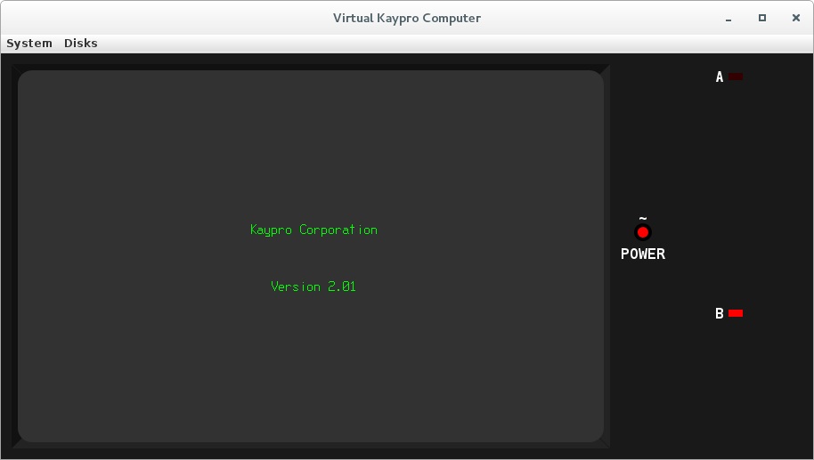
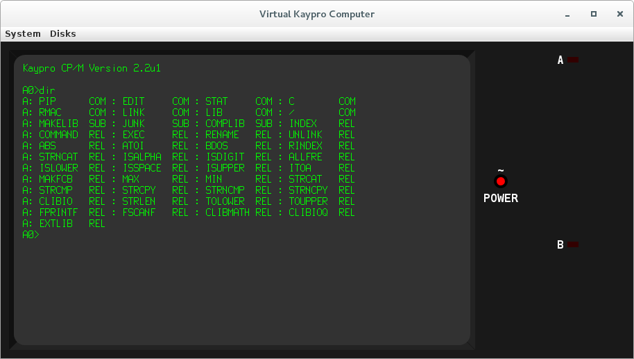

A pure-Java implementation using a modified Java Z80 simulator from https://github.com/jsanchezv/JSpeccy.git.
My first personal computer was a "Kaypro 2X", although exact model information varies. The case was labeled "Kaypro 2" and the back nameplate had an "X" sticker next to the "2". The first mainboard appeared to match what was called "Kaypro 84" in other circles, and had the 81-292 ROM and ran CP/M 2.2G. The mainboard later died, and was replaced with a similar model having the newer "universal" 81-478 ROM and requring CP/M 2.2u.
A Quick Start is available.
Base hardware is currently 2 Z80-SIOs (serial data, keyboard, serial printer, modem), with two WD1943 Baud generators, WD1793 Floppy Disk Controller, System Port, Centronics Parallel Printer Port, SY6545-based CRT Controller. For the early models (a.k.a. "II" and "IV") the base hardware is a single Z80-SIO, two Z80-PIOs, discrete hardware CRT video, and WD1793 Floppy Disk Controller. Information on original Kaypro models is summarized here. The model may be suffixed with an "E" (for Enhanced) to add 256K bank-selected RAM and the RTC (future: built-in modem). This hardware existed for my 2X back in 1986, for running CP/M 3. This option is ignored for the early models (II and IV).
Default ROM may be overridden with config property. Here are some examples:
Model 2X upgraded to 4/84 and enhanced for CP/M 3
Model 10 upgraded to 10X and enhanced for CP/M 3
Note, the CP/M 3 implementation strives to work with all ROMs and hardware configurations. CP/M 2.2 versions from Kaypro are not universal. See the Model Summary document, above.
The Virtual Computer model may be selected by adding the model designator string on the command line. For more control, the virtual computer may be configured using a "properties file", which is plain text. The configuration file may specified on the command line in place of the model string. If there are no commandline arguments, then the environment variable "KAYPRO_CONFIG" is checked for a config file name, and failing that then the current directory is searched for "vkayprorc" and then the user's home directory is searched for ".vkayprorc".
The display (CRT) is implemented using a TrueType font derived from the character generator ROM (81-187/81-235). However, the original video dot aspect ratio was about 1:1.2 and this cannot be cleanly displayed using pixel-sized features. The result is a feature aspect ratio of 1:1 which results in a wider/shorter screen than the original hardware.
The virtual computer jar, and source code, is available on this download page. Additionally, the utility format.jar may be used to create Kaypro format floppy disk images for the simulation. It can be used to pre-load files or TD0 or IMD images also. Also, CP/NET is available for CP/M 3 and this may be used to exchange files directly with your local computer, avoiding the need to create a floppy image containing the files (provided the files exist on your host system). CP/NET can also be made available for CP/M 2.2, but this costs the user a large chunk of their TPA and requires a RESET/reboot in order to recover it.
CP/M and related documentation is available here.
There is also a Z80 disassembler at DazzleStar TNG.
Contact: durgadas311@gmail

